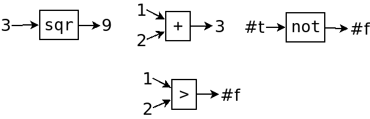
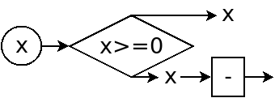
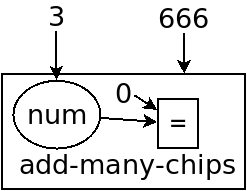
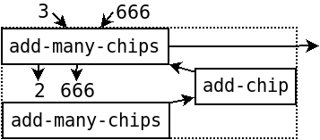
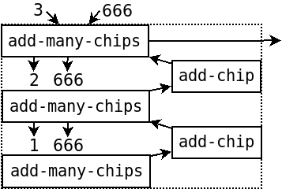
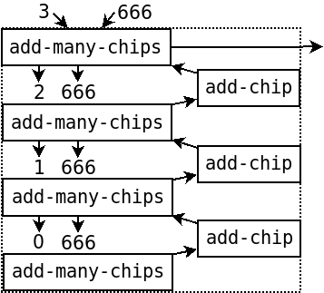
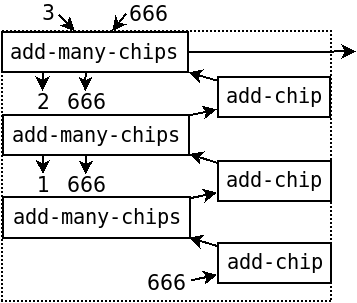
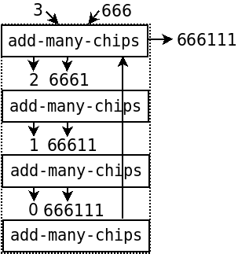
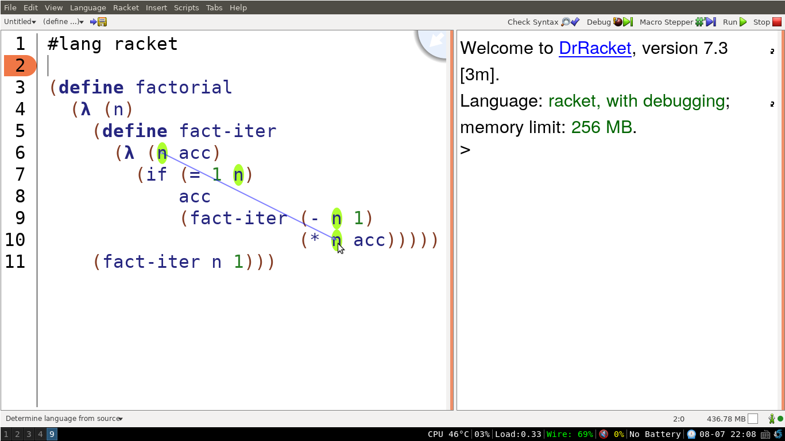

第二章
Table of Contents
首先声明一下，虽然对数字加加减减没什么意思，但要是一上来学别的东西 会更吃不消，把这些基本概念学好了以后，大约下一章就可以摆脱数字了。
不同的包装
猜一猜这是什么
> (= 123 123) #t ;; t 代表 true，中文一般叫做“真” > (= 123 100) #f ;; f 代表 false，“假” > (> 123 100) #t > (< 123 100) #f ;; 还有 >= 和 <=，它们都是函数
很明显，它们都是比较数字大小的，分别是等于，大于，小于，大于等于， 小于等于。(不得不说，看起来实在是怪怪的，我直到现在也觉得很难看)
它们的返回值都是 #t 或 #f, 这两者又是跟数字、函数一样的东西，
被称为布尔值(boolean)。(比如说 123 是数字类型, #t 和 #f
就是布尔类型，具体用语是什么不重要)。
我们把数字类型、布尔类型、函数类型，和之后会接触到的其它的类型，
统称为“数据类型(data type)”
Racket 居然没有不等于函数，但有 not 函数，作为练习，
请自己定义一下不等于函数。
> (not #t) #f > (not #f) #t (define =/= ;; 如果有谁想出了更好看的符号，告诉我一声 (λ (x y) (not (= x y)))) > (=/= 1 2) #t
然后观察一下这些函数，它们跟我们之前讲的函数有些不一样。

第二行的函数不同，不是因为返回值从数字变成了布尔。
而是因为它们把数字和布尔，这两种不同的类型混合起来了。
从上一章的内容中可以体会到，函数都好像工厂里，流水线上的机器一样。 产品从一边流入，经过加工(有些是对一个产品加工(一个参数)， 有些是把一些产品揉在一起(多个参数)，有些是多个参数， 但有主次之分)，经过加工，把加工后的产品送出来。 把函数组合起来就能完成程序。
但这些函数超出了一般函数的观念，它们只消耗了输入， 但没有对它们加工，而是输出了一个判断条件，这是为了控制程序之后的走向。
来看一下如何使用它们
> (if #t 1 2) ;; 若 #t 则 1 否则 2 1 > (if #f 1 2) 2 > (if (= 100 100) (* 1 2 3) ;; 只要是值的地方都可以换成函数运算 456) 6 > (if (>= 123 456) (not (= 1 2)) (+ 1 2)) ;; if 的两个分支的类型不同也可以 3
if 类似于有3个参数的函数，第一个参数是判断条件，
后两个参数是两个分支。第一个参数必须为 #t 或 #f, 如果为 #t
则值为第二个参数，如果为 #f 则值为第3个参数，受到其它语言的影响，
习惯上记忆为:“如果…那么…否则…” (if...then...else...)
不过要注意的是, if 不是一个函数。还记得吗，函数在调用之前，
要先把参数都算出来。但很显然, if 不需要。如果第一个参数为 #t,
那么只需要计算第二个参数就可以，第三个参数不管是多复杂的式子，
都可以直接扔掉。如果第一个参数为 #f 那就只要计算第三个参数。
所以 if 被设计成了一个特殊的语法，而不是一个函数。
练习题: 写出绝对值函数 abs, 如果是正数或零则不变，负数则变正数。
补充: - (减法函数)可以只有一个参数, (- 123) 为 -123
答案有很多种，这是其中一种答案:
(define abs (λ (x) (if (>= x 0) x (- x))))
作为一个好习惯，我们想把 if 画出来。但怎么说呢，这玩意不好画，
一般来讲就是个把程序分成两半的东西

(说实话我也不知道怎么画)
而且很多时候程序不像这么简单，这玩意就没法画了。
而且这么画还没有把 >= 这个函数画出来，而且很难看。
由于 if 只是选择了一个方向，最终的流程还是函数，
所以就不纠结这些了。
if 还有比较常用的地方，是检查错误。比如说，如果给上面的 abs
函数输入一个布尔类型的值
> (abs #t) ; >=: contract violation ; expected: real? ; given: #t ; argument position: 1st ; other arguments...: ; 0
这个错误信息表示我们调用了 >= 函数，然而它出错了(contract violation)，
下面几行就是，它要一个实数，然而我们给了它一个 #t, 是第一个参数，
它还有一个参数是 0 。现在看不懂这些没关系。反正这会让使用者很奇怪，
为什么我调用了 abs 但给了我一个跟 abs 毫不相关的错误?
所以在实际中，一般都会自己检查这类错误，防止让使用者知道，
你这个函数原来偷偷调用了 >= 函数。
(define abs ;; 因为不能重新定义，要先把旧的函数删掉，重新运行 (λ (x) (if (number? x) ;; 严格来讲是 real? (if (>= x 0) x (- x)) (error "abs: number expected, given:" x))))
(注: 严格来说应该用 real? 而不是 number? 是因为 Racket 里的数字
可以是虚数，但反正你又用不到虚数，不用管它)
这里有好多新东西，一点一点来看。
首先, number? 是一个函数，判断参数是否为数字，跟它相似的还有
boolean? (是否为布尔类型)， procedure? (是否为函数)，
string? (是否为字符串)，字符串下面就讲。
如果 x 为数字，那么就照常计算 x 的绝对值，如果不是就报错。
error 怎么说呢，它也是个函数，但跟一般的函数意义上又不一样了，
一旦调用这个函数，不管你在程序的什么位置调用的它，程序都会直接出错。
它的参数就是出错信息了，第一个参数一定要是个字符串，
剩下可以有任意个参数，随便什么都可以，统统是出错信息。
至于字符串，下面这些都是字符串
> "abc" "abc" > "this is a string" ;; 可以有空格 "this is a string" > "" ;; 空的字符串 "" > "!@#$%^ &*()~ `[]-=';" ;; 基本上什么符号都行 "!@#$%^ &*()~ `[]-=';" > "(+ 1 2)" ;; 这跟程序的 (+ 1 2) 一点关系都没有 "(+ 1 2)"
字符串就是用来表示一段文字的，两边双引号，里面的东西会全部当成文字， 而不是程序。所以它会原样输出。一般只会用在给人看的一段文字中。
这样就讲完了，试验新的 abs 函数
> (abs #t) ; abs: number expected, given: #t
全部搞定。
稍微补充一下，电脑不是神奇地就能区分不同的数据类型的， 而是每个值都有一个标记，标志它的类型。
再补充一下, = 这个函数只能判断数字相等，如果要其它类型，
分别可以用 boolean=?, string=?, 没有 procedure=?,
但有一个通用的函数 eqv?, 所有的类型它都可以比较是否相等。
这小节可能要记的东西比较多，但不用着急，暂时能看懂就行，慢慢就记住了。
练习题: 还记得上一章中的 add-what 函数吗，不记得的话回去翻一下
(传送门)。仿照上面的 abs 函数，检查 add-what 的 what 参数，
确保它为0~9之间的整数。
注: 检查整数可用 integer?, 小于或大于号也能有多个参数，
比如0~9可以写做 (<= 0 what 9)
请尽量写出让人能看明白的错误信息，并测试。
如果有如果的话
好了，现在是你在编程道路上的第一个难点。
好些时候，我们会需要重复做某些事，比如，又是上一章中的 add-what,
一个 pie 两个 pie 差不多是够了，但对于 add-chip 来说，
有没有一个函数可以一次性加上很多个 chip 呢?
(define add-many-chips (λ (num x) ....)) ;; 在 x 上加上 num 个 chip
你的第一反应很重要。
(如果你数学真的很好的话，你会发现, num 个1就相当于 num 个9再除以9，
然后 num 个9等于10num 再减1，如果你以为成功了的话，
那请你自己写一下乘方函数，然后你就遇到同样的问题了)
你可以慢慢尝试一下，你最后会发现，要是代码无限的话，只能这么写
(if (= 0 num) x ;; 什么都不加 (if (= 1 num) (add-chip x) ;; 加1个 (if (= 2 num) (add-chip (add-chip x)) (if (= 3 num) .... ....))))
接下来就是找规律时间。我们已经知道, num 是多少，就调用多少次
add-chip, 但要把它向电脑表达清楚。
那么问题就是，什么叫做“调用 num 次 add-chip ”?
经过研究，我们发现我们没法把 num 个 add-chip 写出来，
但是我们看看上面的那一堆 if, 我们发现了规律:
如果 num 多了1，那么 add-chip 也多调用1次。
有人说，这不是废话吗。但这就是“调用 num 次”的本质。
我先不多说，但你可以从现在开始思考一下，自然数是怎么来的。 其实你小时候，数数的时候，就明白了，但现在又忘了而已。
数字就是这么数出来的。
如果 num 是0呢? add-chip 调用0次。
如果 num 比0多1呢? add-chip 多调用1次，就是1次。
如果 num 再比1多1呢? add-chip 再多调用1次，就是2次。
如果 num 再比2多1呢? add-chip 再多调用1次，就是3次。
……
于是对任意的 num 都可以了。
程序把上面的过程反过来就可以了。
(define add-many-chips (λ (num x) (if (= 0 num) x (add-chip (add-many-chips (- num 1) x)))))
你可能会感到有些惊奇，为什么 add-many-chips
里面还能调用它自己。前面做了那么多铺垫，其实就是为了讲这个。
首先，来理解一下这段程序。如果 num 为0，就直接返回 x,
什么都不加; 如果 num 大于0，就先调用 add-many-chips
给它加上 num-1 个1，然后再加一个1.
你问我为什么 (add-many-chips (- num 1) x) 神奇般地就完成了?
因为如果 num-1 是0，那它就完成了，否则就继续减1，
一直重复，直到减到0了为止。
我们需要从程序的角度详细解释一下。 首先，我们都说它是“自己调用自己”，其实函数是没有自己调用自己一说的。 还记得上一章讲的，函数是存在变量里的吗。只是变量把它给复制了 无数次而已。就像这样
(define add-many-chips1 (λ (num x) (if (= 0 num) x (add-chip (add-many-chips2 (- num 1) x))))) (define add-many-chips2 (λ (num x) (if (= 0 num) x (add-chip (add-many-chips3 (- num 1) x))))) (define add-many-chips3 (λ (num x) (if (= 0 num) x (add-chip (add-many-chips4 (- num 1) x))))) ......
有无数个这样的函数。比如调用 (add-many-chips 3 666)
> (add-many-chips1 3 666) ;; 每一行都是一步调用过程 => (add-chip (add-many-chips2 2 666)) => (add-chip (add-chip (add-many-chips3 1 666))) => (add-chip (add-chip (add-chip (add-many-chips4 0 666)))) => (add-chip (add-chip (add-chip 666))) => (add-chip (add-chip 6661)) => (add-chip 66611) => 666111
其实就是这样，这就是函数神奇的地方。
画图就看得比较清楚了。直到现在，我自己还是这么想象它的。
比如说我们调用了 (add-many-chips 3 666), 首先，判断 num 是不是0.
(为了方便我竖着画)

不是0，所以先调用 add-many-chips, 不过要记得完了还要加个 add-chip
(有些箭头画不下了，省略了)

然后我们就要开始计算 (add-many-chips 2 666), 因为2不为0，所以接着调用一层

然后需要计算 (add-many-chips 1 666), 同理，1不为0，再调用一层

好了，现在最底下的这个函数终于发现它的参数是0了，于是它很高兴地返回了666.

接下来就明白了，这个666经过了3个 add-chip 最后得到了结果。
有人可能想问，那在最下面的函数计算的过程中，上面的那些函数干什么呢?
干等着。每一个函数都在等下面的那个函数返回结果，好继续自己的计算。 这不是调用自己才这样的，前面讲的普通的函数也是这样的。
现在你应该大致能想象出这个流程了。我以前看书自学的时候， 所有的教程都是一上来就说“自己调用自己”，这本来就是个误导。 然后又开始讲各种高级的概念，比如“栈”，让我看得一头雾水。 就这么个东西，我大概整了两年才搞懂。上面就是我现在自己的理解。
我现在不想提计算机到底是怎么实现函数一层层调用的，
反正就可以当它是自动发生的。不过我们依然可以看出，
每调用一层函数，它就会多占用一些内存，比如每层 add-many-chips
函数中都有自己的 num 和 x 参数，当调用的非常非常多时，
内存就存不下了。对于想知道术语的人: 这就叫做“栈溢出”。
其它语言里这个问题很普遍，因为栈是内存中固定的一部分。但 Racket 里就没有
(除非你真的把电脑所有的内存都用完了)，这也是我用 Racket 的一个原因，
你可以专心地学习，不用担心调用的次数多了就出问题。
所以我们可以来玩一下。
> (add-many-chips 10000 666) 6661111111111111111111111111111111111111111111111111111111111111111111111111111111111111111111111111111111111111111111111111111111111111111111111111111111111111111111111111111111111111111111111111111111111111111111111111111111111111111111111111111111111111111111111111111111111111111111111111111111111111111111111111111111111111111111111111111111111111111111111111111111111111111111111111111111111111111111111111111111111111111111111111111111111111111111111111111111111111111111111111111111111111111111111111111111111111111111111111111111111111111111111111111111111111111111111111111111111111111111111111111111111111111111111111111111111111111111111111111111111111111111111111111111111111111111111111111111111111111111111111111111111111111111111111111111111111111111111111111111111111111111111111111111111111111111111111111111111111111111111111111111111111111111111111111111111111111111111111111111111111111111111111111111111111111111111111111111111111111111111111111111111111111111111111111111111111111111111111111111111111111111111111111111111111111111111111111111111111111111111111111111111111111111111111111111111111111111111111111111111111111111111111111111111111111111111111111111111111111111111111111111111111111111111111111111111111111111111111111111111111111111111111111111111111111111111111111111111111111111111111111111111111111111111111111111111111111111111111111111111111111111111111111111111111111111111111111111111111111111111111111111111111111111111111111111111111111111111111111111111111111111111111111111111111111111111111111111111111111111111111111111111111111111111111111111111111111111111111111111111111111111111111111111111111111111111111111111111111111111111111111111111111111111111111111111111111111111111111111111111111111111111111111111111111111111111111111111111111111111111111111111111111111111111111111111111111111111111111111111111111111111111111111111111111111111111111111111111111111111111111111111111111111111111111111111111111111111111111111111111111111111111111111111111111111111111111111111111111111111111111111111111111111111111111111111111111111111111111111111111111111111111111111111111111111111111111111111111111111111111111111111111111111111111111111111111111111111111111111111111111111111111111111111111111111111111111111111111111111111111111111111111111111111111111111111111111111111111111111111111111111111111111111111111111111111111111111111111111111111111111111111111111111111111111111111111111111111111111111111111111111111111111111111111111111111111111111111111111111111111111111111111111111111111111111111111111111111111111111111111111111111111111111111111111111111111111111111111111111111111111111111111111111111111111111111111111111111111111111111111111111111111111111111111111111111111111111111111111111111111111111111111111111111111111111111111111111111111111111111111111111111111111111111111111111111111111111111111111111111111111111111111111111111111111111111111111111111111111111111111111111111111111111111111111111111111111111111111111111111111111111111111111111111111111111111111111111111111111111111111111111111111111111111111111111111111111111111111111111111111111111111111111111111111111111111111111111111111111111111111111111111111111111111111111111111111111111111111111111111111111111111111111111111111111111111111111111111111111111111111111111111111111111111111111111111111111111111111111111111111111111111111111111111111111111111111111111111111111111111111111111111111111111111111111111111111111111111111111111111111111111111111111111111111111111111111111111111111111111111111111111111111111111111111111111111111111111111111111111111111111111111111111111111111111111111111111111111111111111111111111111111111111111111111111111111111111111111111111111111111111111111111111111111111111111111111111111111111111111111111111111111111111111111111111111111111111111111111111111111111111111111111111111111111111111111111111111111111111111111111111111111111111111111111111111111111111111111111111111111111111111111111111111111111111111111111111111111111111111111111111111111111111111111111111111111111111111111111111111111111111111111111111111111111111111111111111111111111111111111111111111111111111111111111111111111111111111111111111111111111111111111111111111111111111111111111111111111111111111111111111111111111111111111111111111111111111111111111111111111111111111111111111111111111111111111111111111111111111111111111111111111111111111111111111111111111111111111111111111111111111111111111111111111111111111111111111111111111111111111111111111111111111111111111111111111111111111111111111111111111111111111111111111111111111111111111111111111111111111111111111111111111111111111111111111111111111111111111111111111111111111111111111111111111111111111111111111111111111111111111111111111111111111111111111111111111111111111111111111111111111111111111111111111111111111111111111111111111111111111111111111111111111111111111111111111111111111111111111111111111111111111111111111111111111111111111111111111111111111111111111111111111111111111111111111111111111111111111111111111111111111111111111111111111111111111111111111111111111111111111111111111111111111111111111111111111111111111111111111111111111111111111111111111111111111111111111111111111111111111111111111111111111111111111111111111111111111111111111111111111111111111111111111111111111111111111111111111111111111111111111111111111111111111111111111111111111111111111111111111111111111111111111111111111111111111111111111111111111111111111111111111111111111111111111111111111111111111111111111111111111111111111111111111111111111111111111111111111111111111111111111111111111111111111111111111111111111111111111111111111111111111111111111111111111111111111111111111111111111111111111111111111111111111111111111111111111111111111111111111111111111111111111111111111111111111111111111111111111111111111111111111111111111111111111111111111111111111111111111111111111111111111111111111111111111111111111111111111111111111111111111111111111111111111111111111111111111111111111111111111111111111111111111111111111111111111111111111111111111111111111111111111111111111111111111111111111111111111111111111111111111111111111111111111111111111111111111111111111111111111111111111111111111111111111111111111111111111111111111111111111111111111111111111111111111111111111111111111111111111111111111111111111111111111111111111111111111111111111111111111111111111111111111111111111111111111111111111111111111111111111111111111111111111111111111111111111111111111111111111111111111111111111111111111111111111111111111111111111111111111111111111111111111111111111111111111111111111111111111111111111111111111111111111111111111111111111111111111111111111111111111111111111111111111111111111111111111111111111111111111111111111111111111111111111111111111111111111111111111111111111111111111111111111111111111111111111111111111111111111111111111111111111111111111111111111111111111111111111111111111111111111111111111111111111111111111111111111111111111111111111111111111111111111111111111111111111111111111111111111111111111111111111111111111111111111111111111111111111111111111111111111111111111111111111111111111111111111111111111111111111111111111111111111111111111111111111111111111111111111111111111111111111111111111111111111111111111111111111111111111111111111111111111111111111111111111111111111111111111111111111111111111111111111111111111111111111111111111111111111111111111111111111111111111111111111111111111111111111111111111111111111111111111111111111111111111111111111111111111111111111111111111111111111111111111111111111111111111111111111111111111111111111111111111111111111111111111111111111111111111111111111111111111111111111111111111111111111111111111111111111111111111111111111111111111111111111111111111111111111111111111111111111111111111111111111111111111111111111111111111111111111111111111111111111111111111111111111111111111111111111111111111111111111111111111111111111111111111111111111111111111111111111111111111111111111111111111111111111111111111111111111111111111111111111111111111111111111111111111111111111111111111111111111111111111111111111111111111111111111111111111111111111111111111111111111111111111111111111111111111111111111111111111111111111111111111111111111111111111111111111111111111111111111111111111111111111111111111111111111111111111111111111111111111111111111111111111111111111111111111111111111111111111111111111111111111111111111111111111111111111111111111111111111111111111111111111111111111111111111111111111111111111111111111111111111111111111111111111111111111111111111111111111111111111111111111111111111111111111111111111111111111111111111111111111111111111111111111111111111111111111111111111111111111111111111111111111111111111111111111111111111111111111111111111111111111111111111111111111111111111111111111111111111111111111111111111111111111111111111111111111111111111111111111111111111111111111111111111111111111111111111111111111111111111111111111111111111111111111111111111111111111111111111111111111111111111111111111111111111111111111111111111111111111111111111111111111111111111111111111111111111111111111111111111111111111111111111111111111111111111111111111111111111111111111111111111111111111111111111111111111111111111111111111111111111111111111111111111111111111111111111111111111111111111111111111111111111111111111111111111111111111111111111111111111111111111111111111111111111111111111111111111111111111111111111111111111111111111111111111111111111111111111111111111111111111111111111111111111111111111111111111111111111111111111111111111111111111111111111111111111111111111111111111111111111111111111111111111111111111111111111111111111111111111111111111111111111111111111111111111111111111111111111111111111111111111111111111111111111111111111111111111111111111111111111111111111111111111111111111111111111111111111111111111111111111111111111111111111111111111111111111111111111111111111111111111111111111111111111111111111111111111111111111111111111111111111111111111111111111111111111111111111111111111111111111111111
这在我的电脑上也是瞬间的事(DrRacket 中可能比较慢， 是因为它把这个数字输出到屏幕上很慢，但开始输出的时候它就已经算出结果了)。 电脑的速度一般都比你想象中要快很多。所以我一直想知道， 那些能让我的电脑变得很卡的软件究竟干了些什么…
思考题: (请先保存好你的代码，否则后果自负)。
给 add-many-chips 输入一个很大的数，内存可能就爆了，比如，
我给了它一个亿…然后它3秒钟后占到了3.2G的内存然后卡住了…
好。这说明我们要量力而行，那给它一个小一点的数，比如2.5吧
> (add-many-chips 2.5 666)
为什么它又卡死了?
手动模拟。它要计算1.5，然后0.5，然后…-0.5，然后-1.5，-2.5，…
同理，如果输入是负数的话也会死循环。
那就加点错误处理吧
;; 把原来的函数重命名为 add-many-chips-unsafe ;; 记得把里面的也重命名了 (define add-many-chips (λ (num x) (if (< num 0) (error "add-many-chips: invalid first argument, expected: positive, given:" num) (if (not (integer? num)) (error "add-many-chips: invalid first argument, expected: natural number, given:" num) (add-many-chips-unsafe num x)))))
当然，要详细地写，还要先检查参数是否为数字，否则 (< num 0) 又会报错…
然后你就会被烦死。总之你永远也阻止不了别人错误地使用你的程序。
当然，你在用别人的程序时也一样，别人检查地再怎么仔细， 如果你边打盹边打代码，就不要指望程序是正确的了。
以后我就很少再提错误检查了。因为代码这么短，动不动就检查反倒没必要。 这节就这么结束了。
思考题: 有人可能认为没必要写两个函数，都写在一个函数里就可以
(define add-many-chips (λ (num x) (if (< num 0) (error "add-many-chips: invalid first argument, expected: positive, given:" num) (if (not (integer? num)) (error "add-many-chips: invalid first argument, expected: natural number, given:" num) (if (= 0 num) x (add-chip (add-many-chips (- num 1) x)))))))
第一，这段代码正确吗?
第二，如果正确的话，请手动模拟，比如调用 (add-many-chips 3 666),
两个版本分别检查了多少次错误? 效率上是否会有不同?
练习: 再来一瓶，再来一瓶
(WARNING: 这章会用到一点数学，因为我实在想不出不用数学的例子了， 如果有谁想出来了请一定要告诉我一声)
像上一节中所说的，函数调用自己的这种模式有一个名字，叫做“递归(recursion)”。
准确来说，函数除了直接调用自己，还可以间接调用自己，
比如 f 调用了 g, g 又调用 f.
上一节中也看到了，递归跟普通的函数调用是一样的， 没什么特殊的。唯一的区别就是它可能导致程序死循环。 因为它相当于你写无数个函数嘛。
下面是两个练习
第一个是上节提到的乘方函数。
(define expt ;; b 的 n 次方，只考虑 n 为自然数 (λ (b n) (if (= 0 n) 1 (* b (expt b (- n 1))))))
如果你还不理解函数的原理，请复习上一节。 但知道这个函数是正确的还没有用，因为要学会自己写。
要写 bn，先来分析一下这个函数。首先，用自己能看懂的方式写出来
bn = b*b*…*b，共 n 个 b
然后改递归(当然，你要先确定没有更简单的方式了。 比如写 1+2+…+n，当然就直接套公式了)
首先，考虑省略号中是什么?
就是 n 个 b，没错吧。而 b 就永远都是 b 这个定值，所以对 n 递归。
所以 n 的范围是什么?
我们只考虑自然数，所以是 0,1,2,3… 这些数字。
接下来就要找到一个方法，让我们不管输入什么 n，程序都不会死循环。 然后用这个递归方法，把函数写出来。
对自然数来说，大多时候都是每次减1，一直减到0， 根据情况有例外，下面就会举一个例子。
好，那就根据我们的这个递归方案，试一下能不能写出程序。
b0 = 1，这种情况很简单。
若 n>0, bn 要先调用 b(n-1)，然后只要再乘个 b 就行了。
bn = b*b(n-1)
然后写成上面的程序就完成了。
练习题:
- 如果把 b0 的情况改成 b3 = b*b*b 会怎么样?
- 如果把递归的情况写成 bn = b(n+1)/b 会怎么样?
- 如果把递归的情况写成 bn = b*b*b(n-2) 会怎么样?
- 把递归的情况写成第3题所示，怎样让函数总能停止?(提示: 两次
if)
练习题:
写出阶乘函数: factorial(n)=1*2*3*4*...*n , n>=1
根据上面的方法，我们要把 1*2*3*...*n 改成一个递归式，
比如先尝试 1*(2*3*...*n), 然后会发现失败了，因为
(2*3*...*n) 还是跟 n 有关，而不是跟 n-1 有关，
所以会发现递归式应该是 n*(n-1*...*3*2*1) 即
n*factorial(n-1)
这样代码就完成了
(define factorial (λ (n) (if (= 1 n) 1 (* n (factorial (- n 1)))))) ;; test > (factorial 10) 3628800
练习题:
写出函数 biggest-odd-divisor, 找出一个数字最大的奇数因数
(比如6有因数1,2,3,6，最大的奇数是3)
(Racket 提供了函数 odd? 判断一个整数是否是奇数)
当然，最简单的是一直除以2，直到把2全除掉，剩个奇数为止
(define biggest-odd-divisor (λ (n) (if (odd? n) n (biggest-odd-divisor (/ n 2)))))
当然，还有一个慢得多的方法，因为是找最大，所以我们 从大到小找下去。
(define biggest-odd-divisor (λ (n) (search n (if (odd? n) ;; 确保从奇数开始搜索 n (- n 1))))) (define search (λ (n x) ;; 找到最大的奇数 x 使 n/x 是整数 (if (integer? (/ n x)) x (search n (- x 2)))))
先看懂这段代码吧。这也揭示了一个道理: 往往简单的代码反倒更快。 这也很好理解，每次除以2除到一个数，跟每次减2减到同一个数， 很明显前一个快得多吧。
下面考虑 search 这个递归函数。
问题1: 既然x是奇数而且每次减2，为什么不检查 (= 1 x) 而是只判断
(integer? (/ n x)) 呢?
这是数学知识告诉我们的。总会有一个奇数满足这个条件，如果一直没有，
最后 x 就减到1了，那 (/ n x) 就是 n, 一定是整数，
所以程序一定会停止。
问题2: 为什么这个函数的终止的情况是跟 x 这个递归的变量有关的，
但之前的 expt, factorial 等函数的终止的情况就是个常数?
因为这都要看情况. expt, factorial 的终止条件就是 (= ? n),
所以当终止时, n 就是个定值了，但 search 终止时，
x 不是固定的。
当然就算 x 不固定，结果也不一定需要它，比如
(define power-of-divisor-two (λ (x) (if (odd? x) 0 (+ 1 (power-of-divisor-two (/ x 2))))))
这个函数就是，把 x 除以多少个2就会变成奇数。
所以所谓的递归并没有什么固定的模式，以后有很复杂的问题， 有些递归会非常神奇，完全考验人的智力(动态规划)。 但还是有一些基本原则可以遵守的，上面大致都提到了。 你可以想到，递归基本上什么都能做，它在很多时候是程序最重要的部分。 这还有很多东西要讲。
思考题:
如果 if 不是个特殊语法，而是个函数的话，比如我们重新定义
(define my-if (λ (pred conseq alter) (if pred conseq alter)))
然后用这个 my-if 重新定义前面的递归函数，会发生什么?
最后作为一个练习，如果你还不太理解递归，就把前面的函数画画图吧。
当我学到递归的时候，我晚上做的梦都是递归的，我天天都意识到我在梦里做梦。 现在只能祝你今天有个好梦了。
跳入梦中
再给出上一节中的 add-many-chips 和 factorial 函数。(上一节中的几个函数都是一样的道理)
(define add-many-chips (λ (num x) (if (= 0 num) x (add-chip (add-many-chips (- num 1) x))))) (define factorial (λ (n) (if (= 1 n) 1 (* n (factorial (- n 1))))))
下面是另一个 add-many-chips 的实现方式
(define add-many-chips (λ (num x) (if (= 0 num) x (add-many-chips (- num 1) ;; 这两行改变了 (add-chip x)))))
当然，先看懂它。
然后对比上一节中的图，我们画一下新版 (add-many-chips 3 666) 的图。
(我就只画最终的情况了)

你可能发现了什么，我们的函数被串成一条直线了，也就是说，
下面的 add-many-chips 函数返回了以后就没有别的事了。
这个结果可以直接拿去输出。
这有什么区别呢? 在现在很多流行语言里，没有区别，但是在 Racket 里， 前面说过了，如果给一个很大的输入，旧的版本会占非常大的内存， 但你试一下新的版本? 它居然几乎不占内存! 不管多大的输入都一样 (除了我电脑的风扇转得飞快，CPU飙升到60多度…)
这就要提一个新的概念了，仔细看新版的那幅图，你会发现， 因为下面的那个函数的返回值可以直接输出，所以当我们往下递归一次时， 上面的函数就已经都没有用了。所以 Racket 很机智地就把这些函数都扔掉了， 只留了下面那一个有用的。名副其实的功利主义者啊。
你用 DrRacket 的话，右下角可以看它占的内存，你会发现内存一会儿上升 一会儿又下降了，然后又慢慢上升…因为为了效率，Racket 不是一边计算 一边扔没用的内存，而是过一段时间统一扔一次。这是一种计算机自动管理 内存的方式，叫“垃圾回收(garbage collection)”，下面还会讲到。
然后，由于这种递归是不会越来越占内存的，甚至比以前的递归方式效率还高， 所以它专门有个名字，叫“尾递归(tail recursion)”。 我现在不给详细的定义，但很显然，必须是要能把之前的东西全部扔掉的递归 才能叫尾递归，对吧。(我这里其实撒了个谎，尾递归也有可能越来越占内存， 比如有闭包的时候，但这个以后再说吧，现在这么理解是没问题的)
下面做个挑战，把 factorial 函数改成尾递归模式。
你会发现这个很困难。首先，因为是尾递归，所以当然要给它加一个参数。 然后…然后我还是直接给答案吧，自己体会
(define factorial (λ (n) (fact-iter n 1))) (define fact-iter ;; iterate，可以理解为循环 (λ (n acc) ;; acc: accumulate 累积的结果 (if (= 1 n) acc (fact-iter (- n 1) (* n acc))))) ;; test > (factorial 4) => (fact-iter 4 1) => (fact-iter 3 4) => (fact-iter 2 12) => (fact-iter 1 24) 24
这个真的讲不来，只能靠你自己体会了。
拓展内容:
其实这个函数跟原来的 factorial 不是完全对应的，
它利用了乘法的什么什么律。原来是从1乘到n，现在是从n乘到1.
要跟原来计算顺序对应，可以这么写
(define factorial (λ (n) (fact-iter n 1 1))) (define fact-iter (λ (n counter acc) (if (= n counter) acc (fact-iter n (+ 1 counter) (* counter acc)))))
为什么要提这个呢? 因为我们不用任何特殊的定律就可以转换， 也就是说，我们有固定的方案转换这种递归!大致就是这样
(define f (λ (x) (if (= stop x) stop-value (g x (f (h x)))))) => (define f (λ (x) (f-iter x stop stop-value))) (define f-iter (λ (x counter acc) (if (= x counter) acc (f-iter x (h' counter) (g (h' counter) acc)))))
其中 h' 是 h 的反函数，比如 h(x)=x-1, 那么 h'(x)=x+1.
g 可以是任意函数。
比如我们举个例子吧，取 h(x)=x-1, stop=0 简单理解一下
;; 非尾递归 > (f 3) => (g 3 (f 2)) => (g 3 (g 2 (f 1))) => (g 3 (g 2 (g 1 (f 0)))) => (g 3 (g 2 (g 1 stop-value))) ;; 尾递归 > (f 3) => (f-iter 3 0 stop-value) => (f-iter 3 1 (g 1 stop-value)) => (f-iter 3 2 (g 2 (g 1 stop-value))) => (f-iter 3 3 (g 3 (g 2 (g 1 stop-value)))) => (g 3 (g 2 (g 1 stop-value)))
练习题: 照着上面的 factorial 函数，把 expt 函数也转换成这种形式。
答案:
(define expt (λ (b n) (expt-iter b n 1))) (define expt-iter (λ (b n acc) (if (= 0 n) acc (expt-iter b (- n 1) (* b acc)))))
下面的习题会告诉你自然数是怎么定义出来的。
首先，我们有一个0，然后，我们有一个函数 add1, 它能把一个数加1.
好了，所有的自然数我们都有了，就像这样 (当然不要输到电脑里，这不是合法的程序，只是让你意会一下)
(define 1 (add1 0)) (define 2 (add1 1)) ....
然后我们来定义加减乘除吧。
首先的难点就是，如何定义一个减1的函数 sub1
方法就是从0加上去，如果发现某个数加1以后等于参数，那么返回这个数
(define sub1 (λ (x) (if (= 0 x) (error "sub1: invalid argument. expected: positive integer, given: 0") (sub1-iter x 0)))) (define sub1-iter (λ (x result) (if (= x (add1 result)) result (sub1-iter x (add1 result)))))
然后定义加法
(define + (λ (a b) (if (= 0 a) b (add1 (+ (sub1 a) b))))) ;; 更好的尾递归方法 (define + (λ (a b) (if (= 0 a) b (+ (sub1 a) (add1 b)))))
练习题: 照同样的方式定义减法、乘法、除法，除法会略麻烦， 因为有除不尽的情况。
练习题: 写出函数 gcd?, 找出两个数的最大公约数
(求两个数相除的余数是 remainder, 比如 (remainder 5 3)
为2。求最大公约数的方法自己去网上查)
练习题: 写出函数 prime?, 判断一个数是否为质数
(方法: 从小到大找，如果找到一个因数就说明不是质数，
如果一直找到足够大都没找到，说明是质数)
练习题: 上一章中的倒数第二节的最后我们实现了一个开平方根的函数， 现在修改它，让它最终精确到某个精确度而不是重复几次。 用很小的小数和很大的数测试，确保都能得出适当的结果。 因为计算机只能保存有限位小数，如果实现不恰当， 有可能太大或太小的数就会陷入死循环。 判断相邻两次递归结果不变时终止也不一定可行， 因为可能最后几位小数一直来回摆动。 总之自己去试吧。
这几题还是有点难度的，我不想给答案了，当时我都是自己写出来的。 写出来以后记得测试，但不要依赖于测试，在测试之前就要确保它是对的。 (是不是听起来很矛盾)
好了，数学部分终于结束了
私有财产
回顾一下到现在为止 λ 函数的作用有哪些:
把一段程序的细节隐藏起来，提取重复的代码，和 define 结合起来可以递归。
是的, λ 还有跟 define 一样的作用，就是创造新的变量名字。
比如这样
> ((λ (x) (* x x)) (+ 1 2))
这样也实现了 (+ 1 2) 的平方，应该没有疑问了吧。
它的用处在哪里呢? 在函数里，或者 if 的分支中，
即使你现在没想过，迟早你会想要定义一些临时的变量或函数的。
一个很直接的想法就是，比如尾递归式的 factorial 等函数，
不要让它们的 iter 函数暴露在外面。
其实 Racket 就提供了这种策略。一个 λ 函数内可以
先有一些 define 语句，最后跟着输出，比如
(define factorial (λ (n) (define fact-iter (λ (n acc) (if (= 1 n) acc (fact-iter (- n 1) (* n acc))))) (fact-iter n 1)))
这里，我们就是简单地把 fact-iter 的定义拿进来了，
所以除了 factorial, 别的人就看不到它了。
你需要先回忆一下上一章的内容，理解一下里面的 n 都是哪个 n,
DrRacket 做得很好，你把鼠标移到变量上，它就会显示出这个变量来自哪里。

注: 可能有人想要定义一个函数，它能帮他定义很多东西，比如
(define f (λ () (define a 1) "define a")) > (f) "define a" > a ; a: undefined; ; cannot reference an identifier before its definition
虽然 a 是在 f 中定义的，但跟 f 的参数是一样的，
在 f 结束后就一起消失了。有想要这么干的人，请去网上搜
“Racket 宏(macro)”，不保证能看懂。
也许你会觉得把一个函数挪进来没什么用，但反正作为一个好习惯，
因为 fact-iter 也是 factorial 的实现细节，所以就不应该让别人看到，
就先这么理解着吧。
对于一些函数来说，能够简化代码，比如
(define expt (λ (b n) (define expt-iter (λ (n acc) (if (= 0 n) acc (expt-iter (- n 1) (* b acc))))) (expt-iter n 1)))
跟前面的 expt-iter 对比一下，你会发现我们可以省略一个参数 b,
因为它一直是不变的，只是传来传去而已。
练习题: 同样的，把 sqrt 函数用到的所有的函数都拿进来，
尽可能地减少函数的参数。(原来的 f 有一个 a 一直传，
现在可以消灭掉了)
另外，因为接在 if 两个分支处要定义变量的情况非常普遍，
Racket 还提供了一个语法叫 cond
(define abs (λ (x) (cond [(>= x 0) x] [else (- x)]))) (define prime? (λ (x) (define divisor? (λ (a b) (integer? (/ b a)))) (define search (λ (n) (cond [(> n (sqrt x)) #t] [(divisor? n x) #f] [else (search (+ 1 n))]))) (search 2))) ;; test > (prime? 19260817) #t > (prime? 10000000) #f > (prime? 2) #t ;; 我写完这种代码都不敢说一定是对的，一定要测试一下， ;; 不然写博客被打脸了怎么办
cond 的语法大致是这样
(cond [?1 v1] [?2 v2] [?3 v3] .... [else v-else]) ;; ?n 和 vn 都可以是任意表达式 ;; 若 ?1 则 v1，否则 ;; 若 ?2 则 v2，否则 ;; .... ;; 最终，如果上面都不满足，值为 v-else ;; else 这一行也可以省略 ;; 也可以跟多个表达式 (cond [?1 def1 def2 .... defn v1] ....) ;; 其中 ?1 是判断条件， ;; def1 ~ defn 是 define 语句 ;; v1 是最终的值
(注: 其实在 Racket 中，方括号和圆括号是不分的，只要它们能配对就行，
但作为好习惯，这些函数调用和提供的语法都用圆括号，
像 cond 中这些不表示一个“动作”的东西就用方括号，
这样看起来会清楚得多)
这个语法可能有点麻烦。一般来说，语法都是有统一的格式的， 记住一个以后，类似的就都记住了。
这就是所有的内容了，这章目前只是草稿，还有待修改和完善， 另外如果有谁想出了更好的题目欢迎在下方评论。